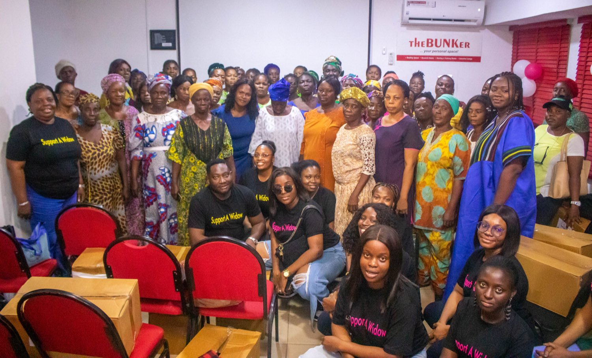
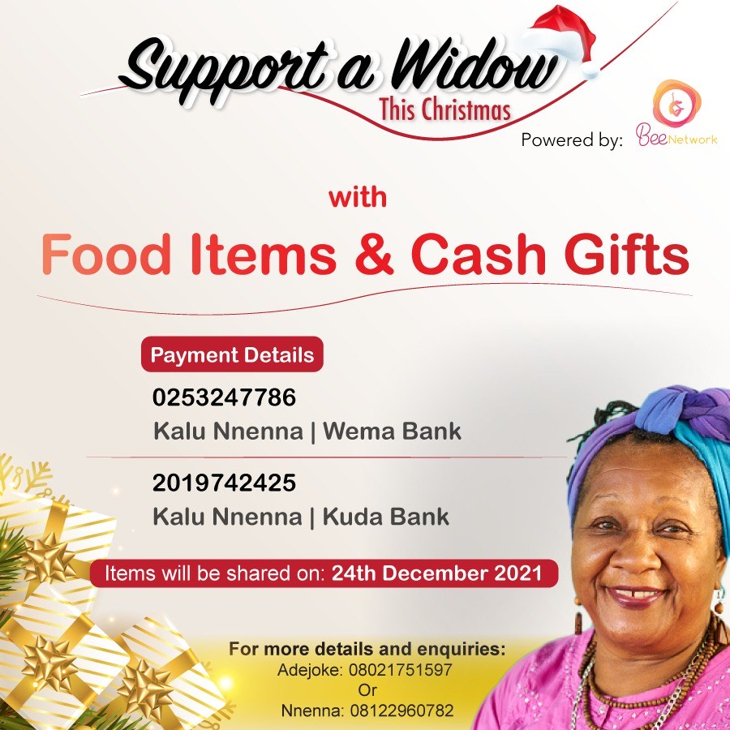
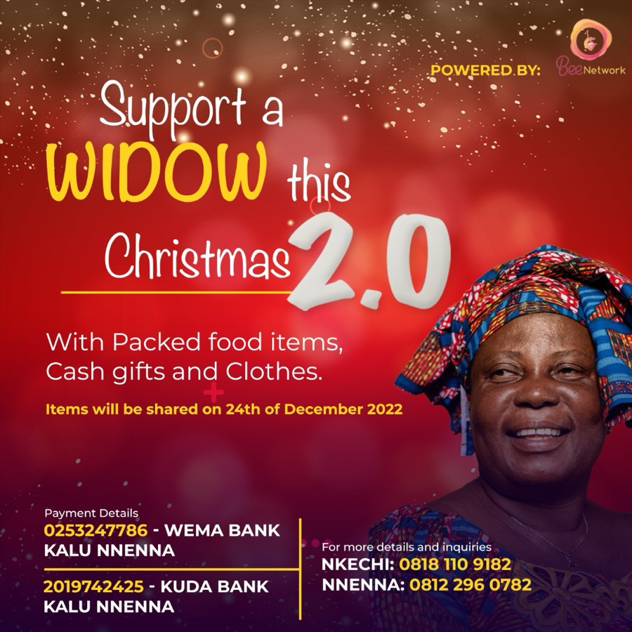
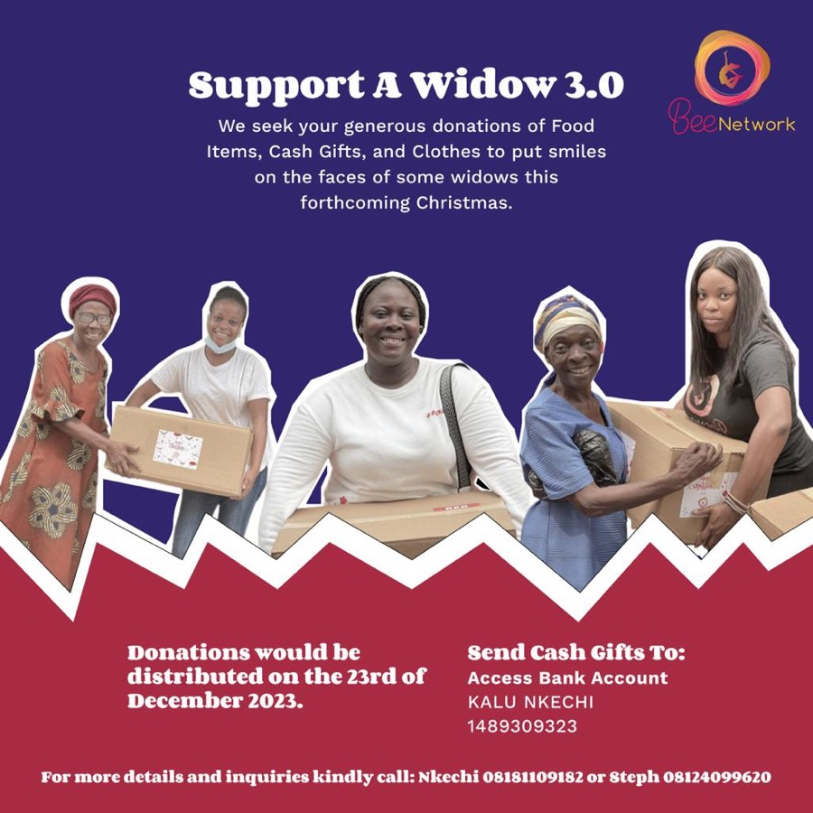
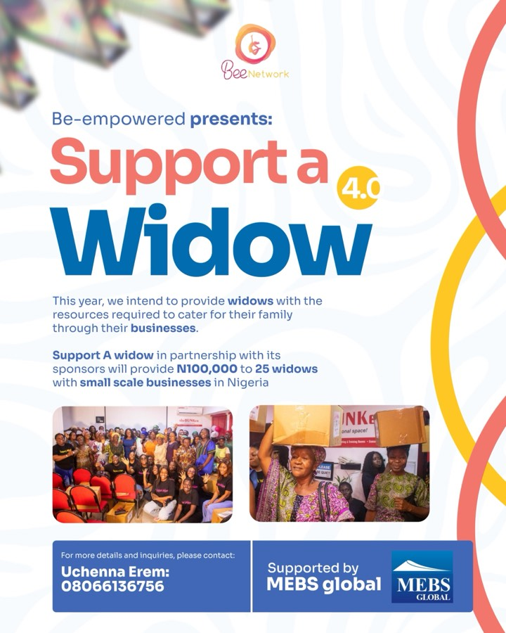
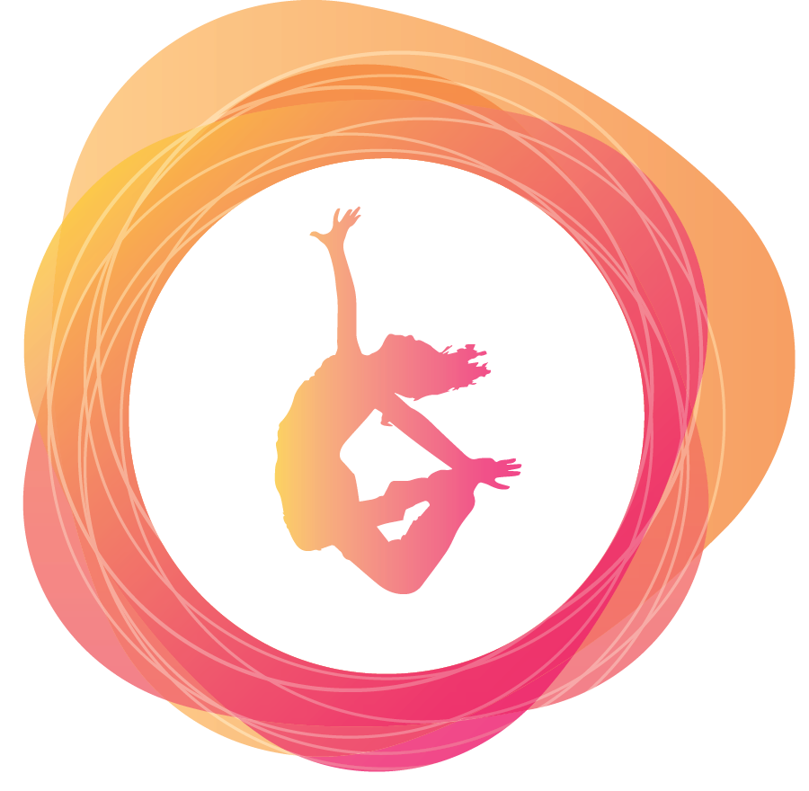

Capital for her business
Direct grants into small businesses that already exist but have no working capital. In the fourth edition, 25 widows each received ₦100,000 with the support of MEBS Global.
An initiative of Be Empowered Network
A widow in Nigeria rarely loses only her husband. She loses the household's income, often the family land, and sometimes her children's place in school. Support A Widow puts money into her business, teaches her the skills that make it pay, and brings her online.

What it does
Relief alone runs out. Each edition pairs something immediate with something that lasts, so a widow leaves with more than she arrived with.
Direct grants into small businesses that already exist but have no working capital. In the fourth edition, 25 widows each received ₦100,000 with the support of MEBS Global.
Hands-on training in trades a widow can start from home and run tomorrow: hairdressing, soap making and bleach production, taught alongside the costing and pricing that decide whether the trade turns a profit.
Getting women who have never sold beyond their street onto a phone: mobile money, pricing a product for WhatsApp, and finding customers who were never going to walk past the shop.
In their own words
Filmed at their own stalls and shop fronts: widows talking about what they are carrying, what their businesses need, and what would actually change things.
Coming this December · the fifth edition
The fifth edition keeps the skills and digital training at its centre, and adds a programme built around the mother and the child together. A widow who is unwell cannot trade. A child sent home over fees rarely goes back.
Each widow receives a critical health assessment, so that conditions which quietly take a woman out of work are found early rather than at a crisis. Thirty women are covered.
School fees for one child per widow, in primary or secondary school, paid directly to the school so that learning is not interrupted by a shortfall at home. Thirty children are covered.
Books, materials and the everyday supplies a child needs to start the academic year on the same footing as the rest of the class, rather than borrowing their way through the first term.
Dates and venue for the December edition are being confirmed. Ask to be told when they are set, or follow @beenetwork.
Over the years
Photographs from Support A Widow distribution days and the volunteer teams who run them.
How it has grown
It began as a Christmas appeal and became a year-round programme of grants and training.

Where it started: an appeal for food items and cash gifts, shared on 24 December 2021.

Packed food items, cash gifts and clothes, shared on 24 December 2022.

A donation drive for food items, cash gifts and clothes, distributed on 23 December 2023.

The turn from relief to enterprise: ₦100,000 each to 25 widows running small businesses in Nigeria, with the support of MEBS Global.
Skills acquisition and digital awareness, health assessments for 30 widows, and school fees and back-to-school kits for 30 children.
How to help
Every edition has run on donated goods, donated money and donated Saturdays.
A cash gift goes to health assessments, school fees paid directly to the school, and training materials. Transfers go to the organisation's own account.
Please email hello@beempowerednetwork.org after you give, so we can thank you and send a record of where it went.
Food items, clothing, school books and materials for the back-to-school kits. Tell us what you have and we will arrange collection or a drop-off point.
Volunteers pack boxes, keep the register, run the skills sessions and sit with the women through the health assessments. Trainers in hairdressing, soap making and bleach production are especially welcome.
“Grief is not a business plan. We give her the capital, the trade and the phone, and then we get out of her way.”
Support A Widow
Sponsor a widow's health assessment, a child's school fees, or a full skills cohort.
